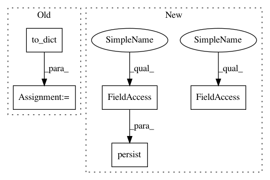

53b261a5a1fad07eaacef60e4861adaf0ec538f0,snips_nlu/tests/test_crf_slot_filler.py,TestCRFSlotFiller,test_should_be_serializable_before_fit,#TestCRFSlotFiller#,177
Before Change
slot_filler = CRFSlotFiller(config)
// When
actual_slot_filler_dict = slot_filler.to_dict()
// Then
expected_slot_filler_dict = {
"unit_name": "crf_slot_filler",
After Change
slot_filler = CRFSlotFiller(config)
// When
slot_filler.persist(self.tmp_file_path)
// Then
metadata_path = self.tmp_file_path / "metadata.json"
self.assertJsonContent(metadata_path, {"unit_name": "crf_slot_filler"})
expected_slot_filler_dict = {
In pattern: SUPERPATTERN
Frequency: 3
Non-data size: 5
Instances
Project Name: snipsco/snips-nlu
Commit Name: 53b261a5a1fad07eaacef60e4861adaf0ec538f0
Time: 2018-07-09
Author: adrien.ball@snips.net
File Name: snips_nlu/tests/test_crf_slot_filler.py
Class Name: TestCRFSlotFiller
Method Name: test_should_be_serializable_before_fit
Project Name: snipsco/snips-nlu
Commit Name: 53b261a5a1fad07eaacef60e4861adaf0ec538f0
Time: 2018-07-09
Author: adrien.ball@snips.net
File Name: snips_nlu/tests/test_crf_slot_filler.py
Class Name: TestCRFSlotFiller
Method Name: test_should_be_serializable_before_fit
Project Name: snipsco/snips-nlu
Commit Name: 53b261a5a1fad07eaacef60e4861adaf0ec538f0
Time: 2018-07-09
Author: adrien.ball@snips.net
File Name: snips_nlu/tests/test_log_reg_intent_classifier.py
Class Name: TestLogRegIntentClassifier
Method Name: test_should_get_intent_after_deserialization
Project Name: snipsco/snips-nlu
Commit Name: 53b261a5a1fad07eaacef60e4861adaf0ec538f0
Time: 2018-07-09
Author: adrien.ball@snips.net
File Name: snips_nlu/tests/test_probabilistic_intent_parser.py
Class Name: TestProbabilisticIntentParser
Method Name: test_fitting_should_be_reproducible_after_serialization